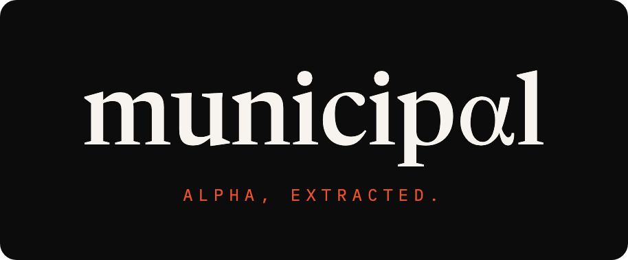
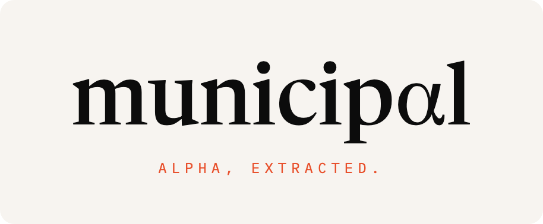
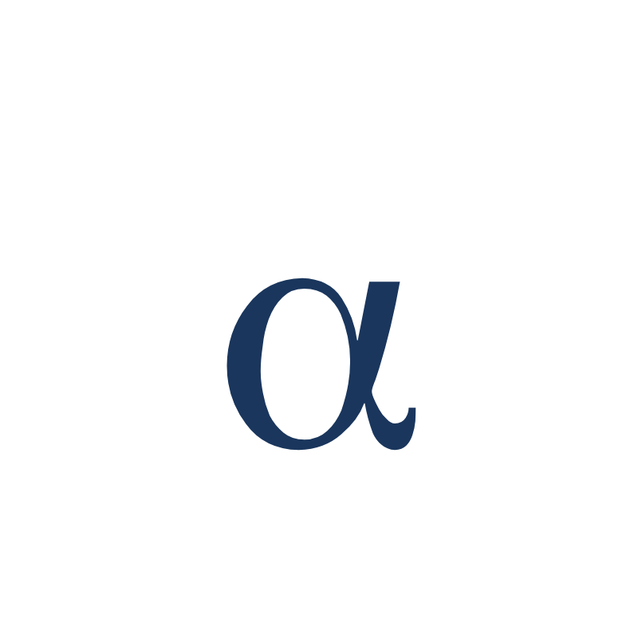

municipαl
Every day, thousands of small towns across the US publish meeting minutes, check registers, permit applications, capital plans, and bid tabulations. It's all public record, but nobody reads it because it's scattered across 2,100+ municipal websites in dozens of different formats. Municipal Alpha reads all of it, structures it, and finds the investment signals buried inside.
A town's planning board approves a zoning change that affects a nearby property portfolio. A check register reveals a government contractor winning new municipal business. A capital plan signals infrastructure spending before it shows up anywhere else. These signals were always there in the public record, just encoded in documents that nobody outside town hall was reading.
The product is that moment of recognition: "I didn't know that was there." The information was never hidden, it was just waiting for someone to read it.
Look at the wordmark below. It says "municipal." But the "a" is actually a Greek alpha (α). Most people read right past it and just see the word. Once you notice it, you can't unsee it.
That's the whole company in one typographic move. The signal was always there, encoded in plain sight, obvious once you know where to look. The α does double duty: it's the "a" in municipal, and it's alpha, as in the investment term for edge, for being early to the party, for knowing something before everyone else.
The serif typeface is deliberate. Public records, newspapers, legal documents, the Congressional Record. Serif is the typography of things that are on the record. The α is set in a lighter weight than the bold letters around it, the same way the signal is quieter than the noise it sits inside.



For large-format use. The α materializes from scattered data points like a constellation resolving into a letter.

Structured, investable data from 2,100+ municipalities across 50 states. Updated daily.
Icon / favicon: standalone α
App icon / social: α in navy square
Navigation: municipαl wordmark at nav size
Hero / splash: full wordmark or expressive particle treatment
Pitch deck cover: expressive α (constellation version)